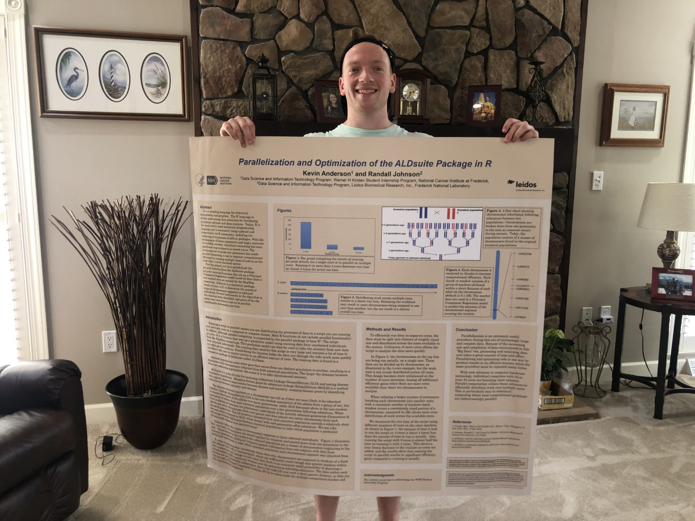

I'm Kevin Anderson, and I am a current M.S Student at the University of Pittsburgh.
I completed my undergraduate at Pitt with Bioinformatics major with a minor in History. And am currently working on my Masters degree in Genome Bioinformatics.
I love science and technology, obviously. I choose to study bioinformatics because I have always been fascinated with molecular biology, and also what we can uncover through manipulation and analyzation of large genetic data. I have been behind or around a computer all of my life, whether that be browsing the web or playing videogames, and even building them. I figured combining my curiosity and enthusiasm of biology while using my skills I have developed behind a computer for a living would be my dream job! I was also infatuated with all of the unknowns that bioinformatics has to offer. Being a fairly new field, there is so much information that is left to be interpreted!